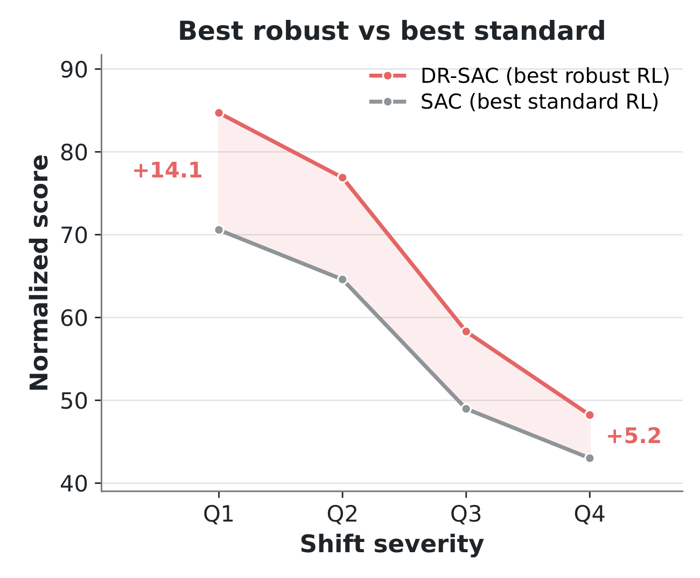
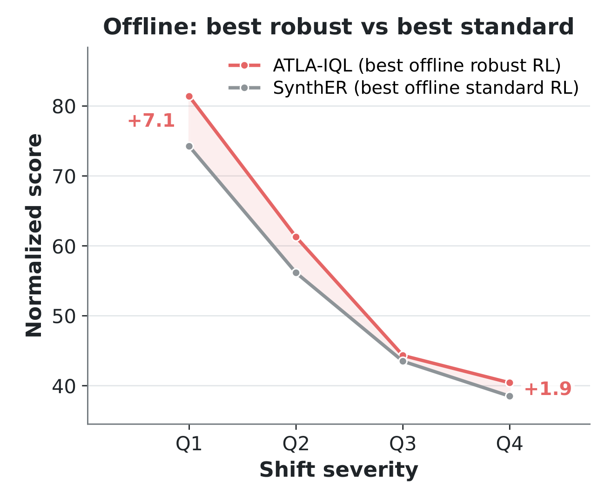

The two algorithms are selected by overall performance: among the 14 robust and the 6 standard algorithms of the library, we take the one with the highest score under shift, averaged over all tasks and shift conditions of the library-wide evaluation. This selects DR-SAC and SAC. Both are online algorithms, so they are evaluated on the same tasks and the same shift conditions.

The best robust algorithm stays above the best standard algorithm at every severity level. The gap is +14.1 at Q1 and +5.2 at Q4. Over all levels DR-SAC scores 66.8 and SAC 56.7.
Among the offline algorithms, the same selection by overall performance gives ATLA-IQL, from the 8 robust algorithms, and SynthER, from the 4 standard algorithms.

The best offline robust algorithm also stays above the best offline standard algorithm at every severity level. The gap is +7.1 at Q1 and +1.9 at Q4. Over all levels ATLA-IQL scores 56.9 and SynthER 53.2.